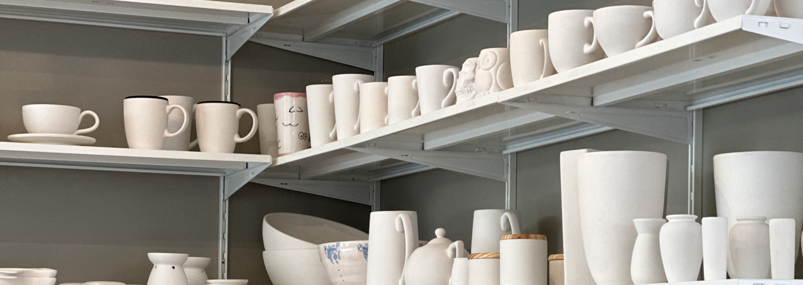

Oferecemos a escolas e instituições educacionais uma sessão orientada de pintura de cerâmica desenhada para inspirar criatividade, ensinar paciência e dar aos alunos uma peça de arte tangível para levar para casa.
Traz a sua turma ao nosso estúdio em Alcântara. Os alunos vivenciam o ambiente criativo completo, veem como funciona um estúdio de cerâmica e têm espaço para se concentrar na sua arte.
Capacidade: Até 30 alunos por sessão
Duração: 2-3 horas incluindo introdução e tempo de pintura
Podemos levar tudo até vocês. A nossa equipa prepara-se na vossa sala de aula ou espaço de atividades, trazendo todos os materiais e orientação necessários para uma sessão bem-sucedida.
Requisitos: Mesas, cadeiras e acesso a água
Duração: 2-3 horas incluindo preparação e tempo de pintura
Todas as marcações escolares devem ser feitas com pelo menos 2 meses de antecedência através de canais oficiais de comunicação da escola.
Trabalharemos convosco para selecionar a peça de cerâmica, confirmar datas e coordenar a logística.
Oferecemos preços especiais para instituições para garantir que todas as crianças possam participar. Cada aluno pinta a mesma peça selecionada a um preço unificado.
Contacta-nos para preços detalhados baseados no tamanho do grupo e peça de cerâmica escolhida.
Máximo de 30 alunos por sessão. Para turmas maiores, podemos organizar múltiplas sessões no mesmo dia ou em dias consecutivos.
Todos os materiais, orientação da nossa equipa, cozedura e vidragem. Até 3 professores e/ou pessoal acompanhante participam gratuitamente.
Consulta as nossas FAQ para detalhes sobre o nosso estúdio, o processo de pintura e tire suas dúvidas.
Visitar FAQ